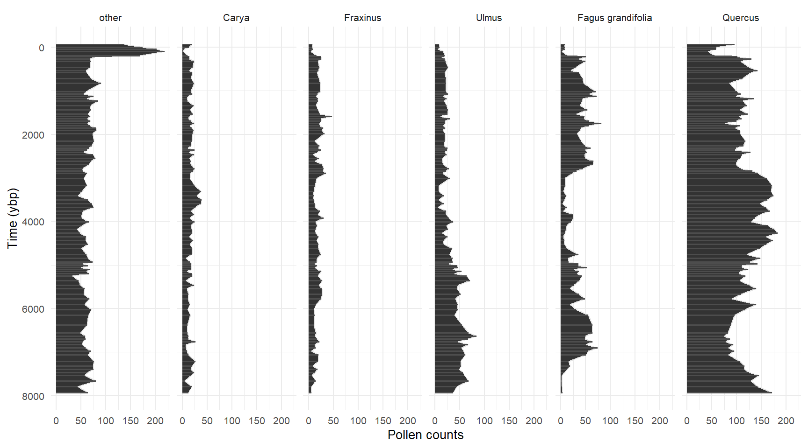
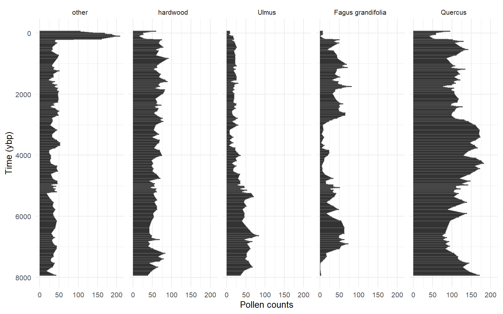
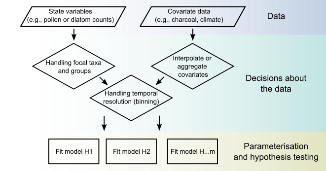

Link to repo: https://github.com/QuinnAsena/state-space-workhop-ESA
UW-Madison
2026-04-13
Link to repo: https://github.com/QuinnAsena/state-space-workhop-ESA
One of the primary goals of this model is to be able to test multiple hypotheses about the data and lend statistical support to the different hypotheses.
This state-space approach allows us to estimate coefficients for taxa interactions and driver-taxa relationships, that we don’t get from methods such as ordination or cluster analysis.
We recommend this method as complimentary to other methods, as both have their advantages.
Work with uneven time-intervals between observations, and multinomially distributed data
multinomialTSmultinomialTS
mnGLMM()mnTS()mnTS() to multiple hypothesesThe response variable, \(Y\), is of count-type data. Covariates, \(X\), can be of mixed types (e.g., binary events, or charcoal accumulation rate).
For the model we need two matrices of data:
Today, we will look into the estimated parameters \(B\) and \(C\):
Fitting the model to estimate different combinations of parameters allows us to test hypotheses and lend statistical support to them.
For example are species interactions or environmental covariates the primary driver of change?


Fitting the model to different combinations of parameters and assessing the resulting models lends statistical support to hypotheses about the data.
Link to repo: https://github.com/QuinnAsena/state-space-workhop-ESA
